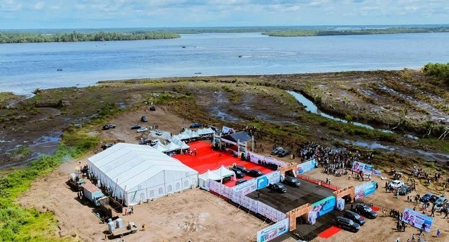

Tinubu Hails Bakassi Seaport, Says Project Will Create Jobs, Boost Trade

Tinubu Hails Bakassi Seaport, Says Project Will Create Jobs, Boost Trade
President Bola Tinubu has described the groundbreaking of the Bakassi Deep Seaport in Cross River State as a step towards diversifying Nigeria’s economy, expanding trade and creating jobs. Vice President Kashim Shettima represented him at the ceremony in Bakassi on Friday, November 13, 2026. Tinubu commended Governor Bassey Otu and the state’s residents for advancing a project first conceived in 2014.
Designed with a 20-metre draft, the port is intended to receive large vessels that currently bypass Nigerian ports. A planned 260-kilometre superhighway would connect it to markets across the country. Tinubu said the facility would complement Lagos, which handles more than 80 per cent of Nigeria’s foreign trade, by easing congestion and reducing the country’s reliance on a single maritime gateway. He said Nigeria handles only a fraction of regional cargo trade despite the importance of sea transport to commerce.
Tinubu credited Otu with helping to address institutional and financial obstacles, including efforts to secure a $3.5 billion financing arrangement with Afreximbank and formalise the project’s Public-Private Partnership framework in February 2025. Otu said the groundbreaking followed years of political, administrative, legal and environmental challenges. He cited an initial funding approval of $2.27 billion, federal approval for the project and preparatory work including environmental, hydrographic, geotechnical and geophysical studies.
Otu said the port could support employment and business in logistics, shipping, fishing, tourism and shipbuilding. Selected Cross River residents are receiving specialised training for construction and operational roles, he said. The governor also pointed to a corridor linking the state’s airport, seaport and Lagos-Calabar Coastal Highway as a route for cargo and investment, and invited maritime-sector investors to consider opportunities in the state.
Marine and Blue Economy Minister Gboyega Oyetola pledged his ministry’s support for a modern, efficient and environmentally sustainable port. He said the project could improve market access and create industrial and employment opportunities, with benefits extending beyond Cross River. Tinubu urged residents to protect the project from political interference and described it as an investment for future generations.
Source: Channels TV